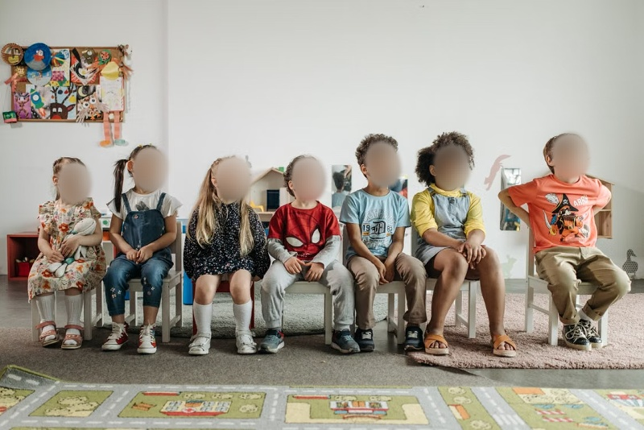
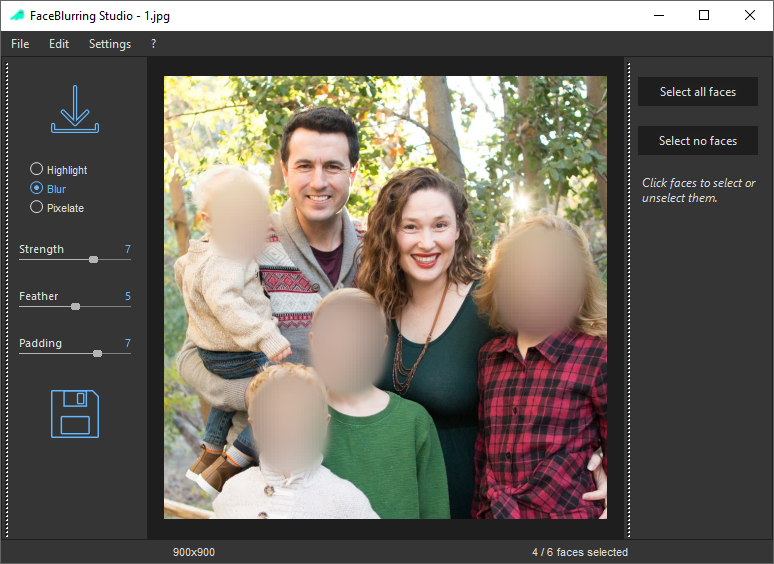
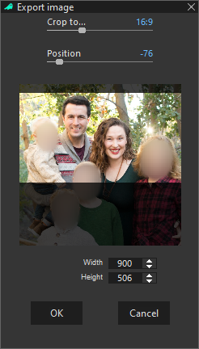
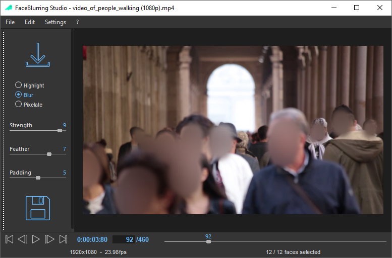
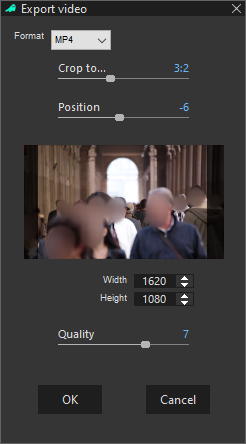
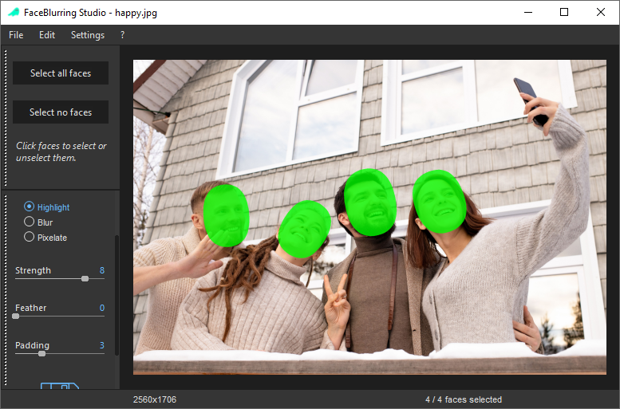
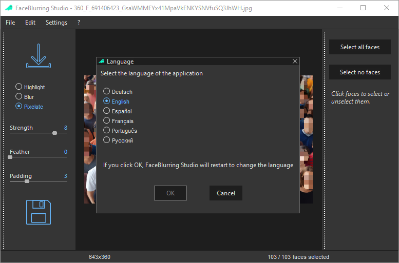

Automatic AI detection
Detect faces automatically in images and videos.
FaceBlurring Studio automatically detects faces in photos and videos. Blur, pixelate or highlight them in just a few clicks - with all processing performed locally on your computer.
Windows 10 / 11 · 64-bit · Freeware

A straightforward workflow gives you control over every face — whether you are working with a single photo or a video.
Detect faces automatically in images and videos.
Blur, pixelate or highlight detected faces.
Use the same simple workflow for both formats.
Select all faces at once, then fine-tune individual selections.
Your photos and videos never leave your machine.
A user interface available in multiple languages.
A clear interface designed to get the job done quickly.
Designed to handle images containing thousands of faces.
Unlike many online tools, FaceBlurring Studio performs all processing locally on your computer. No cloud upload is needed to anonymize your images or videos.
No complicated editing skills required.
Open an image or a video
Let the AI detect and blur faces automatically
Blur / unblur individual faces with a click if needed
Export the final result
See how FaceBlurring Studio handles images, videos, face masks and exports.






Protect people's privacy wherever images and videos are shared or used.
Download FaceBlurring Studio for Windows and start anonymizing your photos and videos — for free.
Download FaceBlurring Studio